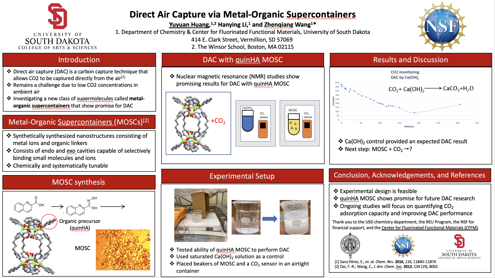

Low-Resource Language Models for Kurdish and Narragansett
Developed low-resource language models for Kurdish and Narragansett using
BERT and HuggingFace in Python, contributing to more inclusive natural language
processing technology for 1,800+ people in underserved linguistic communities
across Rhode Island. Focused on equitable language model training, bias detection,
and linguistic preservation.
Urban Air Quality Analysis in Chinatown
Built a Python tool integrating web scraping and generative AI to streamline
literature reviews on PubMed, reducing manual search time by 25%. Analyzed urban
air quality disparities in disadvantaged Boston neighborhoods using Python, R, and Excel.
Presented findings to 200+ community members at Tufts Medical Center and Boston
Chinatown Neighborhood Center to inform advocacy efforts.
Direct Air Capture via Metal-Organic Supercontainers

Conducted experiments in direct air carbon capture and drug delivery. Applied computational
and statistical tools for data interpretation in Python, R, and Microsoft Excel. Conducted
literature reviews, authored and edited grant proposals, graduate-level theses, and research
papers. Presented findings at American Chemical Society Regional Conferences (2022, 2023).